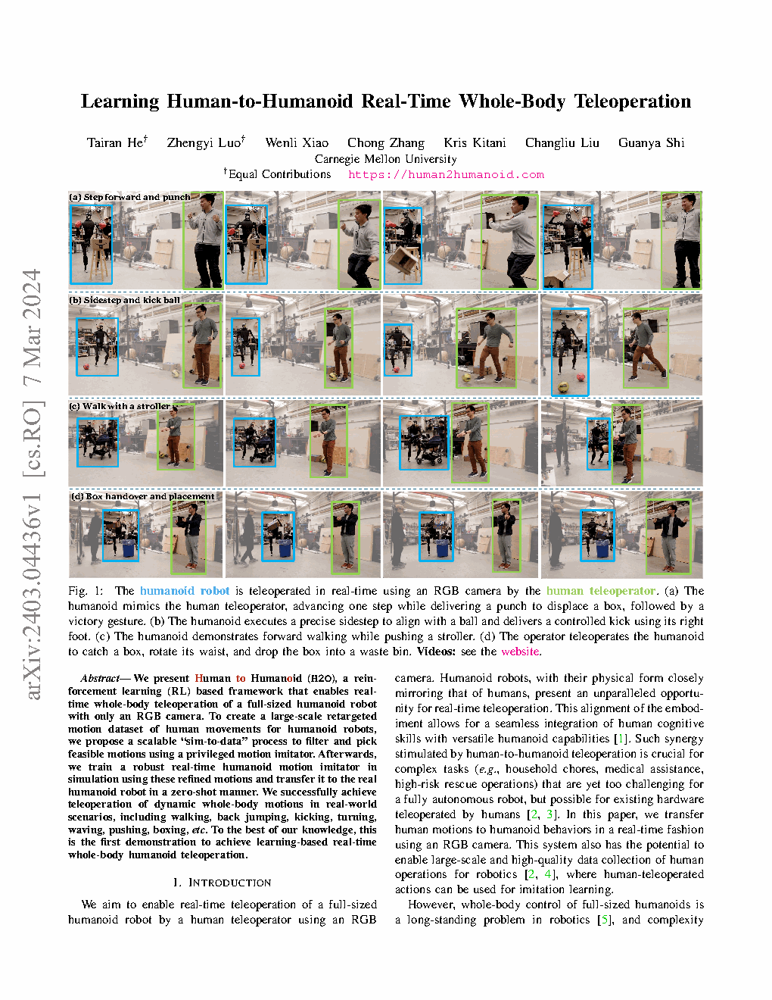
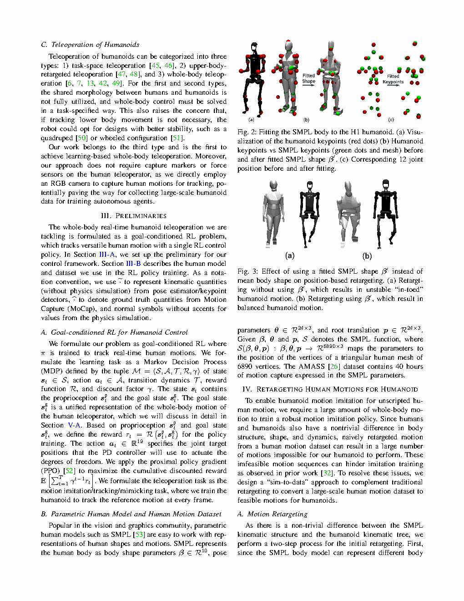

| Title | Learning Human-to-Humanoid Real-Time Whole-Body Teleoperation（基于学习的人到人形机器人实时全身遥操作） |
| Authors | Tairan He†、Zhengyi Luo†（共同一作），Wenli Xiao，Chong Zhang，Kris Kitani，Changliu Liu，Guanya Shi（corresponding） |
| Affiliation | 卡内基梅隆大学（Carnegie Mellon University），Robotics Institute（机器人研究所） |
| Venue | IEEE/RSJ IROS 2024（International Conference on Intelligent Robots and Systems），pp. 8944–8951 |
| DOI / Links | 10.1109/IROS58592.2024.10801984 | arXiv: 2403.04436 | 项目主页: human2humanoid.com |
| TL;DR | 提出 H2O（Human-to-Humanoid）——首个仅用单目 RGB 相机实现全尺寸人形机器人（Unitree H1）实时全身遥操作的端到端学习框架。核心创新链条：（1）Sim-to-Data——从大规模人体动作数据集（AMASS）出发，通过逆运动学重定向 + 特权仿真模仿器筛选不可行动作，自动构建大规模人形机器人可执行动作数据集；（2）Sim-to-Real RL Policy——基于目标条件 PPO + 域随机化训练，零样本迁移到真实机器人；（3）实时遥操作——现成的 3D 人体姿态估计器（HybrIK）+ RL 策略 = 无标定、无外骨骼、无障碍的即插即用遥操作。展示了行走、后跳、踢腿、转身、挥手、推、拳击、取放物体、推婴儿车共 9 种全身技能。 |
| Inspiration Source | → What Insight It Inspired | Type |
|---|---|---|
| 运动模仿（motion imitation）与特权学习（privileged learning）文献：Peng et al. (2018) DeepMimic, Lee et al. (2020) 等 | → "先学会模仿任意运动"的框架已有，但受限于手工设计的运动数据。如果能把互联网规模的人体动作数据（AMASS 含 40+ 小时动作）自动转换为机器人训练数据，数据瓶颈就被打破了。关键洞察：教师策略 = 可行性过滤器 | 框架 |
| Teacher-Student 蒸馏范式（Rusu et al. 2016, Chen et al. 2020） | → 特权教师（访问仿真真值：接触力、物体位置、外部扰动）学习难度更低、收敛更快、成功率更高；学生策略虽然只看到本体感知和参考姿态差值，但通过模仿教师的行为分布，隐式学到了鲁棒控制策略。这种"信息不对称 → 行为对齐"的范式是本工作的核心方法论 | 方法 |
| 动作重定向（Motion Retargeting）与逆运动学（IK） | → 人体 SMPL 模型（22 关节）与人形机器人（19 自由度）之间的关节对应可以通过 IK 优化求解。关键是：不需要精确的逐帧映射，"大致合理"即可，因为后续的 RL 策略会自动修正残留误差——这大大降低了重定向的质量门槛 | 架构 |
| 现成的 3D 姿态估计器——HybrIK（Li et al. 2021） | → 在遥操作端的感知不需要自研——HybrIK 处理单目 RGB 输出 SMPL 姿态参数，直接作为重定向的输入。这使得整个系统可以"即插即用"：任意单目相机 + 现成姿态估计器 + H2O 策略 = 实时遥操作 | 策略 |
| Domain Randomization（Tobin et al. 2017, OpenAI et al. 2019） | → 在仿真中随机化质量、摩擦、关节力矩、控制延迟、地面几何等物理参数，训练出的策略对真实世界的物理不确定性具有天然的鲁棒性。关键在于随机化范围的标定——需要保守到覆盖现实参数范围，又不能太激进导致策略无法收敛 | 工程 |
flowchart TB
subgraph PERCEPTION["感知层 (Operator Side)"]
CAM["单目RGB相机 · 30fps"]
HYBRIK["HybrIK · 3D人体姿态估计 · 25Hz"]
SMPL["SMPL模型 · 22关节 · 姿态参数 θ, β"]
end
subgraph RETARGET["重定向层 (Motion Mapping)"]
IK["逆运动学求解器 · SMPL→H1"]
JOINTMAP["关节对应映射 · 22→19 DOF"]
LIMITCHECK["关节限位检查 · 裁剪超限值"]
GOAL["目标状态生成 · Δq, Δq̇, Δx"]
end
subgraph POLICY["策略层 (H2O Core)"]
PROP["本体感知: q, q̇, ω_base, g"]
ACTOR["PPO策略网络 · MLP · 256-128-128"]
ACTION["19维目标关节位置 · a_t ∈ R^19"]
end
subgraph ROBOT["执行层 (Unitree H1)"]
PD["PD控制器 · Kp=40, Kd=0.5 · 200Hz"]
TORQUE["关节力矩 · τ = Kp(q_des-q) + Kd(q̇_des- q̇)"]
H1["Unitree H1 · 19-DOF · ~47kg · 1.8m"]
end
subgraph SKILLS["技能演示"]
WALK["行走 0.5m/s"]
JUMP["后跳"]
KICK["踢腿"]
TURN["转身"]
WAVE["挥手"]
PUSH["推重物"]
BOX["拳击"]
PNP["取放物体"]
end
CAM --> HYBRIK --> SMPL
SMPL --> IK --> JOINTMAP --> LIMITCHECK --> GOAL
GOAL --> ACTOR
PROP --> ACTOR
ACTOR --> ACTION --> PD --> TORQUE --> H1
H1 --> SKILLS
H1 -.->|"本体感知反馈 · 25Hz"| PROP
GOAL -.->|"实时更新 · 25Hz"| ACTOR
PD -.->|"200Hz闭环"| H1
classDef percep fill:#eff6ff,stroke:#3b82f6,stroke-width:2px,color:#1d4ed8
classDef retarget fill:#f5f3ff,stroke:#8b5cf6,stroke-width:2px,color:#6d28d9
classDef policy fill:#fff7ed,stroke:#f59e0b,stroke-width:2px,color:#b45309
classDef robot fill:#ecfdf5,stroke:#10b981,stroke-width:2px,color:#047857
classDef skills fill:#dbeafe,stroke:#2563eb,stroke-width:2px,color:#1e40af
class CAM,HYBRIK,SMPL percep
class IK,JOINTMAP,LIMITCHECK,GOAL retarget
class PROP,ACTOR,ACTION policy
class PD,TORQUE,H1 robot
class WALK,JUMP,KICK,TURN,WAVE,PUSH,BOX,PNP skills
flowchart TB
subgraph OFFLINE["离线训练阶段 (Sim-to-Data + Policy Training)"]
direction LR
AMASS["AMASS数据集 · 40h+人体动作"] --> IKRET["IK运动学重定向 · SMPL→H1"]
IKRET --> TEACHER["特权教师训练 · PPO+全部仿真状态"]
TEACHER --> FILTER["可行性筛选 · 跟踪误差<阈值 = 成功"]
FILTER --> DATASET["Sim-to-Data数据集 · 大规模+高质量+机器人可执行"]
DATASET --> STUDENT_TRAIN["学生策略训练 · PPO+域随机化 · ~10亿步"]
STUDENT_TRAIN --> DEPLOY["可部署策略 · 零样本迁移"]
end
subgraph ONLINE["在线遥操作阶段 (Real-Time Teleop)"]
direction LR
RGB["操作者单目RGB"] --> POSE["HybrIK姿态估计 25Hz"]
POSE --> RET["IK重定向 · SMPL→H1"]
RET --> TGT["目标姿态 q_ref(t)"]
TGT --> POL["H2O策略推理 <1ms"]
POL --> CMD["19维目标关节位置"]
CMD --> LOW["PD控制器 200Hz"]
LOW --> REAL["真实H1执行"]
end
subgraph FEEDBACK["反馈闭环"]
REAL -->|"本体感知: q, q̇, ω"| PROP_FB["关节编码器+IMU"]
PROP_FB --> POL
REAL -->|"25Hz视觉刷新"| POSE
end
OFFLINE -->|"导出策略权重"| POL
REAL --> FEEDBACK
classDef offline fill:#fef7ed,stroke:#f59e0b,stroke-width:2px,color:#92400e
classDef online fill:#eff6ff,stroke:#3b82f6,stroke-width:2px,color:#1d4ed8
classDef fb fill:#f0ebfd,stroke:#8b5cf6,stroke-width:2px,color:#6d28d9
class AMASS,IKRET,TEACHER,FILTER,DATASET,STUDENT_TRAIN,DEPLOY offline
class RGB,POSE,RET,TGT,POL,CMD,LOW,REAL online
class PROP_FB fb
flowchart TD
subgraph STAGE1["阶段1: 数据收集与重定向"]
direction LR
S1A["AMASS人体动作数据集
3000+ subjects · 40h+ mocap"] --> S1B["SMPL参数提取
身体姿态θ + 体型β + 全局平移"]
S1B --> S1C["IK运动学重定向
最小化SMPL-H1关键点误差"]
S1C --> S1D["重定向动作序列
19 DOF · 50Hz · 包含关节限位裁剪"]
end
subgraph STAGE2["阶段2: Sim-to-Data 可行性筛选"]
direction LR
S2A["训练特权运动模仿器
PPO · 访问仿真全部状态"] --> S2B["特权教师渲染:
接触力·物体位姿·扰动信息"]
S2B --> S2C["逐段执行重定向动作
记录每段跟踪误差"]
S2C --> S2D{误差<阈值?}
S2D -->|是| S2E["保留到Sim-to-Data数据集"]
S2D -->|否| S2F["丢弃 · 不可行动作"]
end
subgraph STAGE3["阶段3: 学生策略训练"]
direction LR
S3A["Sim-to-Data数据集
大规模+高质量目标姿态"] --> S3B["目标条件PPO训练
学生策略·仅可部署观测"]
S3B --> S3C["域随机化
质量±30%·摩擦±50%·延迟0~20ms"]
S3C --> S3D["收敛检查
回报稳定·跟踪误差<阈值"]
S3D --> S3E["导出可部署策略权重 · ~10亿步训练"]
end
subgraph STAGE4["阶段4: 零样本部署与遥操作"]
direction LR
S4A["加载策略 · GPU推理"] --> S4B["连接单目RGB相机"]
S4B --> S4C["HybrIK实时姿态估计 25Hz"]
S4C --> S4D["策略生成关节命令"]
S4D --> S4E["H1 PD控制器执行 200Hz"]
S4E --> S4F["实时全身遥操作
行走·跳·踢·转身·挥手·推·拳击·取放"]
end
STAGE1 -->|"重定向动作"| STAGE2
STAGE2 -->|"可行性筛选数据集"| STAGE3
STAGE3 -->|"策略权重文件"| STAGE4
S3D -.->|"不收敛: 调整随机化范围·奖励权重"| S3B
S2D -.->|"筛选率反馈: 调整重定向精度"| S1C
S4F -.->|"策略鲁棒性反馈: 调整域随机化"| S3C
classDef s1 fill:#fef7ed,stroke:#f59e0b,stroke-width:2px,color:#92400e
classDef s2 fill:#eff6ff,stroke:#3b82f6,stroke-width:2px,color:#1d4ed8
classDef s3 fill:#f0ebfd,stroke:#8b5cf6,stroke-width:2px,color:#6d28d9
classDef s4 fill:#ecfdf5,stroke:#10b981,stroke-width:2px,color:#047857
class S1A,S1B,S1C,S1D s1
class S2A,S2B,S2C,S2D,S2E,S2F s2
class S3A,S3B,S3C,S3D,S3E s3
class S4A,S4B,S4C,S4D,S4E,S4F s4
| 类别 | 内容 | 维度 |
|---|---|---|
| 输入（操作端） | 单目 RGB 视频流（普通网络摄像头），操作者全身在画面内 | H×W×3 图像帧 @ 30fps |
| 输出（机器人端） | 19 个目标关节位置（H1 全身关节：双腿 6×2 + 双臂 4×2 + 躯干 1） | $\mathbb{R}^{19}$ @ 25 Hz → PD 跟踪 @ 200 Hz |
| 目标 | 操作者的全身动作被 H1 零延迟、高保真地实时复现（行走、后跳、踢腿、转身、挥手、推、拳击、取放、推车） | 姿态跟踪误差 Minimize + 成功率 Maximize |
| 中间产物 | Sim-to-Data 数据集——大规模、高质量、经动力学可行性验证的人形机器人动作数据，可复用于未来的模仿学习/强化学习 | （姿态序列，成功标记，仿真真值）元组 |
这是一个学习型全身遥操作（Learning-based Whole-Body Teleoperation）任务——核心难点在于将经典遥操作问题（需要精确标定的硬件链路）转化为学习问题（从数据中自动习得人-机器人映射关系）。任务性质是目标条件下的连续控制（Goal-Conditioned Continuous Control），结合了 Sim-to-Real Transfer 和 Real-Time Systems 两个子领域。平台：Unitree H1 全尺寸人形机器人（19 自由度，~47 kg，1.8 m），场景：操作者在任意环境中通过单目相机遥操作机器人执行多种全身技能，目标：零样本部署 + 低成本硬件（无需动捕/外骨骼）+ 全身高保真控制。
⚠ 表头用英文，正文用中文
| Prior Method | Core Idea | Why It Fails for This Task |
|---|---|---|
| Optical Motion Capture Teleoperation（光学动捕遥操作） | 操作者穿戴反光标记球，多台红外相机实时跟踪人体关节 3D 位置（亚毫米精度），直接映射到机器人关节（如 DARPA Robotics Challenge 中使用 Vicon + Atlas） | 硬件成本极高（Vicon 系统数十万美元）、需要专用场地（无法在野外/家庭使用）、标记球容易遮挡和脱落。本质上是高精度但无泛化能力——精度依赖标定和硬件，而非智能映射。 |
| Wearable Exoskeleton / Haptic Device（穿戴式外骨骼遥操作） | 操作者穿戴外骨骼或力反馈设备，通过机械连接或惯性传感器直接测量人体关节角度，具有力反馈功能（如 Sarcos、IHMC 方案） | 穿戴负担重——操作者需要穿上几十公斤的设备，长时间操作疲劳。校准复杂（每次穿脱都需要重新标定），且外骨骼本身限制了人体自然运动范围。力反馈虽然有用，但增加了机械复杂度。 |
| VR Controller / Kinematic Retargeting（VR 手柄 + 运动学重定向） | 操作者使用 Oculus/Vive 手柄和头显，通过简单的运动学缩放映射到机器人末端执行器，结合全身 IK 求解生成关节姿态（如 Ishiguro et al., NVIDIA Isaac Gym 示例） | 无法感知全身姿态——手柄只能追踪手部 6-DOF 位姿，躯干、腿部、脚部姿态无法直接获取。全身动作依赖 IK 补全（如固定腰部、脚不离地），导致无法执行腿部动作（行走、踢腿等）——而这恰恰是人形机器人的核心价值。 |
| Imitation Learning from Human Video（从人类视频学习机器人技能） | 从互联网视频中提取 2D/3D 人体姿态，用行为克隆或逆强化学习直接训练机器人策略（如 Peng et al. 2018, NIST 挑战中使用的方法） | 缺少动力学验证环节——直接从人类视频学习忽略了人类与机器人的动力学差异。即使运动学上可行的轨迹，机器人执行时可能因为接触力不匹配、扭矩不足或 ZMP 超出支撑域而失败。这类方法需要在真实机器人上大量在线调整。 |
| Whole-Body MPC / Optimization-Based Control（全身模型预测控制 / 轨迹优化） | 建立人形机器人全身动力学模型，在线求解非线性 MPC 问题生成关节扭矩（如 IHMC、MIT Cheetah 使用的方法） | 模型依赖 + 实时求解困难——全身动力学模型（包含接触约束）是高维非线性系统，在实时频率（100+ Hz）下求解超实时困难。且模型精度（质量分布、摩擦锥模型、接触刚度）难以保证，模型误差会在动态动作中迅速放大导致失稳。 |
H2O 的核心方法论是两阶段解耦 + 域随机化 + 教师-学生蒸馏的组合。第一阶段（Sim-to-Data）：训练一个可访问仿真全部状态的"特权教师策略"，用它来筛选人体动作数据中的"机器人可执行"子集；第二阶段（Policy Training）：用筛选后的数据和域随机化训练一个仅依赖可部署传感器的"学生策略"。两个阶段都使用 PPO（Proximal Policy Optimization）算法，但观察空间和奖励函数设计有差异——教师有特权信息所以奖励更丰富，学生只有本体感知和参考姿态差值所以必须学会隐式推理接触力和外部扰动。
LaTeX rendered by MathJax. 显示公式用 $$...$$，行内公式用 $...$。⚠ 符号解释请用中文。
| 参数 | 取值 | 含义 | 为什么取这个值 |
|---|---|---|---|
| H1 自由度（DOF） | 19 | 双腿各 6（髋 3 + 膝 1 + 踝 2）+ 双臂各 4（肩 3 + 肘 1）+ 躯干 1 | Unitree H1 的实际硬件配置。不控制手指（手部为被动/固定），因此精细操作能力受限 |
| PD 控制器增益 | $K_p = 40$, $K_d = 0.5$ | 目标位置 → 力矩转换的比例-微分增益 | 经验选择的权衡值——太高导致刚度过大（刚性碰撞损伤关节），太低导致跟踪精度不足。RL 策略的输出是动态的"目标位置"，PD 负责底层的高频跟踪（200 Hz） |
| PPO 训练步数 | ~10 亿步（教师和学生合计） | 总强化学习环境交互步数 | 大规模并行仿真（Isaac Gym，4096 环境并行）使得 10 亿步可在数天内完成。足够策略探索各种动作组合和动力学情况 |
| 奖励函数权重 | $w_p=0.5, w_v=0.05, w_e=0.3, w_b=0.15$ | 姿态/速度/末端/平衡的加权系数 | 姿态匹配是最高优先级（权重 0.5），末端位置次之（0.3，因为操作任务需要手部精度），平衡和速度是辅助项 |
| 域随机化质量范围 | ±30% 标称质量 | 每个连杆质量在标称值 ±30% 范围内均匀随机 | 覆盖制造公差（~5%）和负载变化（如手持物体），并留下充分裕量。30% 是经验值——太小则 sim-to-real 过拟合，太大则策略难以收敛 |
| 控制延迟范围 | 0 ~ 20 ms | 从策略输出到 PD 执行的模拟延迟 | 真实 H1 系统的通信延迟约 5~15 ms。20 ms 上界覆盖了最差情况（包括视觉处理延迟的前馈影响） |
| 感知-策略频率 | 25 Hz | HybrIK 姿态估计 → IK 重定向 → 策略推理的频率 | 受限于 HybrIK 的实时运行速度（~40ms/帧）。25 Hz 对于步行（1~2 Hz 步频）和中等速度动作足够，但对于高速动态动作（如奔跑 >3 Hz）可能不够 |
| Sim-to-Data 可行性阈值 | 跟踪误差 < 0.1 rad（关节） | 判断一个动作段"是否可执行"的关节跟踪误差上界 | 0.1 rad ≈ 5.7°——在机器人关节空间中是一个合理的"近似跟踪"阈值。太严格（如 0.01 rad）会丢弃太多数据，太宽松（如 0.3 rad）会留下低质量数据 |
理解 H2O 需要掌握三个关键基础原理：运动学重定向（如何把人体运动映射到机器人关节空间）、Sim-to-Data 可行性筛选（如何用仿真教师过滤不可行动作）、域随机化 Sim-to-Real 迁移（如何使仿真训练的策略在真实世界工作）。
为什么 IK 重定向的精度要求不需要很高？因为 H2O 的架构设计是分层的——IK 只负责提供一个"大致合理"的初始目标姿态；RL 策略的奖励函数是相对误差（当前姿态与参考姿态的差值），而非绝对姿态。这意味着 IK 解的小偏移会被策略当作"需要修正的方向"——策略通过本体感知的反馈来隐式修正 IK 的不准确性。这与传统方案"IK 必须完美否则机器人会摔倒"有本质区别。
| 对比维度 | 传统数据筛选（人工规则） | Sim-to-Data（教师策略筛选） |
|---|---|---|
| 筛选标准 | 手工设计的运动学/动力学规则（关节限位、速度上限、ZMP约束） | 教师策略的实际执行结果（能否成功跟踪） |
| 覆盖面 | 只能排除明显违反规则的，但无法判断"动力学是否可行" | 同时考核运动学和动力学——策略摔倒 = 不可行 |
| 泛化性 | 规则需要针对每种机器人重新设计 | 只需重新训练教师策略（自动化） |
| 可扩展性 | 规则复杂度 O(1)，无法覆盖更多微妙情况 | 教师策略越强 → 筛选越准 → 可训练更复杂的技能 |
域随机化为什么对全身动作特别有效？全身动态动作（行走、后跳、踢腿）的关键难点是接触事件——脚何时触地、触地时地面反力多大、是否会滑动。这些接触事件的物理特性极度依赖难以精确建模的参数（接触刚度、阻尼、摩擦锥形状）。域随机化通过让策略经历"各种可能的接触物理"，使其学会不依赖特定的接触力/摩擦假设——策略的输出变为"在大多数合理物理下都能维持平衡的动作"，而不是"在特定物理参数下精准的动作"。
📷 论文关键图表截图。图片保存至 figures/ 子目录。

📷 请将截图保存为figures/fig1.png本图展示了：H2O 系统的完整 pipeline——从操作者的单目 RGB 图像输入到 Unitree H1 全身动作输出的端到端链路。核心分为四层：(a) 感知层——操作者自然站立在普通摄像头前，HybrIK 从 RGB 帧中实时提取 SMPL 人体模型参数（3D 姿态 θ 和体型 β）；(b) 重定向层——SMPL 人体关节通过 IK 优化映射到 H1 机器人关节空间，考虑关节限位和骨骼比例差异，生成目标关节姿态序列；(c) 策略层——H2O 策略接收两个输入流：当前本体感知状态（关节位置/速度、IMU）和重定向后的目标姿态差值，输出 19 维目标关节位置；(d) 执行层——H1 底层 200 Hz PD 控制器跟踪目标关节位置，转换为关节力矩驱动。右上角插图展示了 9 种演示技能的机器人快照。

📷 请将截图保存为figures/fig2.png本图展示了：H2O 在真实 Unitree H1 上的遥操作实验结果——操作者通过单目相机控制 H1 执行多种全身技能的抓拍和定量评估。9 种技能覆盖了不同动态特性和接触模式：(1) 行走——持续性周期运动，双足交替支撑，涉及稳定的步态周期和质心横向摆动；(2) 后跳——爆发性运动，需要短时间失重期 + 着陆冲击吸收；(3) 踢腿——单腿支撑 + 另一腿高速摆动，足部末端速度可达数 m/s；(4) 原地转身——双脚交替抬放的准静态转动；(5) 挥手——上半身独立运动，下半身维持站立平衡；(6) 推重物——双手接触外部物体，力通过双臂传递到全身，需要全身协调对抗反力；(7) 拳击——双臂高速交替出拳，上半身高速运动对躯干平衡产生周期性扰动；(8) 取放物体——双手抓取-搬运-放置，涉及精确的手部定位；(9) 推婴儿车——双手固定接触 + 行走，是最复杂的组合技能。
| 数据问题 | 潜在困难 | 严重程度 |
|---|---|---|
| 单目姿态估计的输入质量敏感性 | HybrIK 对光照、视角、遮挡、衣物宽松度敏感。极端情况下（操作者侧身、蹲下、部分被遮挡），SMPL 参数输出可能跳跃或漂移。这些噪声直接作为策略的输入目标——如果噪声幅度超过策略的鲁棒边界，可能导致机器人执行突变动作甚至摔倒。目前的解决方案是"依赖策略鲁棒性"，但缺少显式的异常检测/拒绝机制 | ★★★★★ |
| 操作者-机器人比例差异的残余误差 | IK 重定向已经尽力最小化了关节位置误差，但人体（约 1.7 m）与 H1（1.8 m）的骨骼比例差异导致末端执行器（手、脚）的世界坐标存在无法消除的系统性偏移。例如操作者手臂较短但 H1 手臂较长——当操作者手碰到桌面时 H1 的手可能已经穿透桌面。这种系统误差在当前框架中没有补偿机制 | ★★★★ |
| AMASS 数据集的偏差与 Sim-to-Data 的放大效应 | AMASS 主要来源于实验室动捕，动作类型偏向行走、跑步、日常动作，但缺少人形机器人真正需要执行的操作类动作（如搬运、开门、使用工具）。Sim-to-Data 管道会进一步过滤掉"机器人难以执行"的动作——如果 AMASS 本身缺乏某类动作，Sim-to-Data 数据集也会缺乏。这可能导致策略的动作多样性天花板由源数据集决定 | ★★★ |
| 域随机化的"赌注"性质 | 域随机化的成功依赖于真实物理参数落在随机化分布内这一关键假设。如果真实 H1 的某个物理特性（如关节静摩擦的 stiction 效应、PD 控制器的量化误差）在仿真中完全没有建模，域随机化也无法覆盖。验证方法只有实机测试——如果测试失败，往往不知道哪个未建模的物理项是元凶 | ★★★ |
| 参考文献 | 为什么重要 |
|---|---|
| Peng et al. (2018) — DeepMimic: Example-Guided Deep Reinforcement Learning of Physics-Based Character Skills. ACM Trans. Graph. (SIGGRAPH 2018) | 运动模仿领域的奠基性工作——首次用 RL 训练仿真角色模仿动捕数据中的复杂技能（后空翻、侧手翻等）。H2O 的运动模仿范式直接继承自 DeepMimic，但将其从"仿真动画"推进到了"真实机器人遥操作" |
| Li et al. (2021) — HybrIK: A Hybrid Analytical-Neural Inverse Kinematics Solution for 3D Human Pose and Shape Estimation. CVPR 2021 | H2O 使用的现成姿态估计器。HybrIK 结合了解析 IK 和神经网络的优势——利用 SMPL 模型的运动学先验消除深度歧义。理解 HybrIK 的工作原理有助于判断"什么情况下姿态估计会失败"，直接影响 H2O 的故障模式分析 |
| Rusu et al. (2016) — Sim-to-Real Robot Learning from Pixels with Progressive Nets. CoRL 2016 | 提出了 Progressive Networks 用于 Sim-to-Real 迁移——在仿真中训练的策略通过累加新层来适应真实世界。H2O 虽然使用不同的技术（域随机化 + 蒸馏），但 Sim-to-Real 问题背景和训练范式与 Rusu et al. 一致 |
| OpenAI et al. (2019) — Solving Rubik's Cube with a Robot Hand. arXiv:1910.07113 | 域随机化 Sim-to-Real 的标志性成功案例——用大规模域随机化训练灵巧手解魔方，零样本迁移到真实机器人。H2O 的域随机化策略与 OpenAI 的工作在方法论上一脉相承，但应用于人形机器人全身控制而非灵巧操作 |
| AMASS (Mahmood et al., 2019) — AMASS: Archive of Motion Capture as Surface Shapes. ICCV 2019 | H2O 的数据源头——统一的 40+ 小时人体动捕数据集，覆盖 SMPL 参数化人体模型。理解 AMASS 的数据分布对于评估 Sim-to-Data 的数据质量、识别数据偏差至关重要 |
| Chen et al. (2020) — Learning to Walk in the Real World with Minimal Human Effort. CoRL 2020 | 使用教师-学生蒸馏实现四足机器人（Minitaur）的 Sim-to-Real 行走——教师在仿真中学习后在真实机器人上蒸馏学生。H2O 的教师-学生框架与 Chen et al. 的区别在于：H2O 的教师还充当"数据过滤器"，而不仅仅是策略蒸馏 |